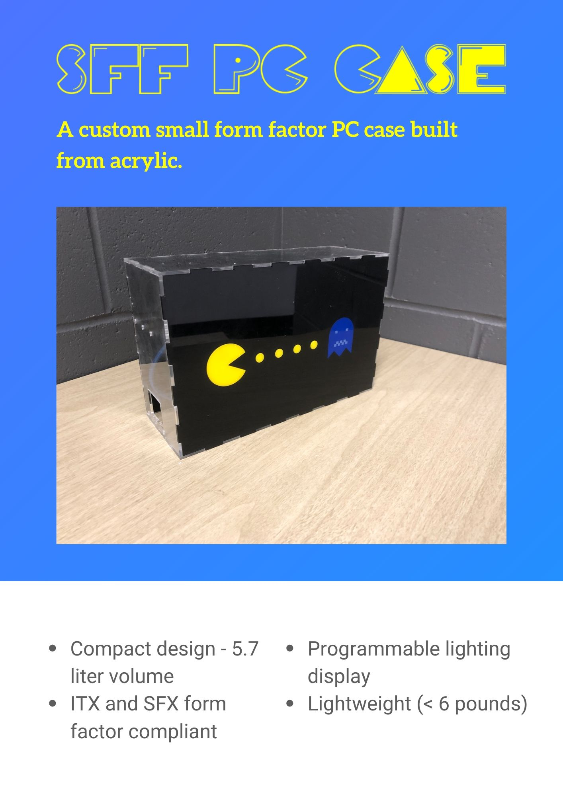

This project utilized lasercut acrylic and basic arduino skills to build a small form factor pc with programmed led patterns.

The inspiration from this project comes from my appreciation of technologies ability to downsize.
I love being able to save space on my desk, and love the idea of being able to have a small form PC sitting on my desk.
I wanted the design to be simple, ala the PS2 slim, or some of the available home theater PCs out there.
The ideal user from this product is someone looking to save space. They are on the go, and need the power of a desktop
that fits in a backpack or bag. Students, designers, cad experts, and others who have intense computer power needs
would all greatly benefit in this design.
I have built a few computers in the past, or rather built one computer and continued to
swap parts out sporadically as I saw fit. With each big iteration, I have downsized, from the
full sized ATX standard, to micro ATX, to ITX (with a full size power supply).
This iteration features an SFX power supply, which has allowed me to downsize to an even greater degree.
I wanted to built a case that would be portable, taking up much less volume than my current case, which
stands at around 15 liters. The case I drafted, seen in the fusion sketch, has a volume
of 5.7 liters.
There are two key components involved in this pc apart from this case. The SFX power supply, and the
ITX motherboard. I attempted to use premade assemblies for the items in question, howver I found them
to be inaccurate. I had to make multiple cuts of the SFX PSU screwholes and power cable slot, which
still ended up being a bit off.
Seen below are the screwholes and input/output slotting for both the motherboard and power supply (Motherboard
is currently unavailable. Distances and measurements taken from GrabCad STP and AsRock webpage.)
I used a standard finger slot pattern. I attempted to play with sizing to get a press fitting,
thereby bypassing kerf, however this resulted in a few cracked panels. I ended up using acrylic cement to
join the case together. I was however able to press fit the emoticons onto the front panel of the case using
a hammer. This took a few iterations and broken Pac Men; I discovered that the optimal kerf adjustment was about
101.5-102% size increase for objects of that size.
Part of the motivation for a custom case was an issue arising in my current case. When asleep, the computer
continued to flash lights into the night, and would not turn off. Using an arduino nano, and a few LEDs,
I programmed a pattern of lights on the box. The arduino was housed on a
breadboard stuck to the back of the panel. To signify the computer's sleeping state, after the sequence ran its course,
the lights turn off. When the motherboard arrives, the cases lights will run off of motherboard power,
rather than an external supply.
This was a really fun project, one that I had wanted to do for a while. I am very satisfied with how it turned out,
and fully intend to iterate upon this design, and use it. The case is perfect for my current living situation; as a college student,
saving space in my room is imperative, and being able to carry a powerful computer in my backpack is extremely convienient.
Had I had more time, there were a few tweaks I would have made. Firstly, rather than having to pry open the front plate,
I would have implemented T-slotting with screws and bolts, such that I could tighten and untighten the case with a screwdriver.
I was also interested in building a collapsable handle, such that the computer case could be carried around with ease. In terms of aesthetics,
I had an idea to make the entire front plate one big pacman game, but felt that I should focus on form first, and found myself
without time towards the end.